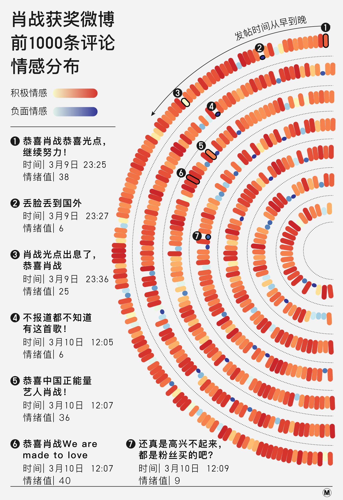

《警惕饭圈化》一文曾写道，现在一些极端的饭圈已经成为了具有极强动员能力的组织，它们用重复低质的内容填充各个平台，用简单粗暴的方式区分异己，在网络空间里攻击任何表达异议的人。
近期让我感受最深的一件事，是#肖战光点2020全球单曲畅销榜第七#的热搜：在IFPI发布的这份排名里，肖战甚至还排在 Billie Eilish 之前……这合理吗？！出于对欧美音乐圈的薄弱认知，我想先看看其他网友的评论再下结论。然而，点开评论区的一瞬间，这里一片“祥和”的景色着实吓到我了。
下图颜色越暖，表示情感越积极，比如“恭喜肖战！不得不说一句牛逼！早晚每天都听的歌！《光点》很喜欢”。颜色越冷，表示情感越负面，比如“不得不感叹中国粉丝的消费力多强以及审美多差”。
前1000条评论中，这种冷言冷语的微博仅仅只有82条……和肖战粉丝的购买力一样，这些粉丝的控评能力也非常可怕。
于是我再往下挖了挖，爬取了共计4198条评论，正常地球人都不可能爬到的楼层。不出所料，评论区是发了大水般的正能量。同样，下图颜色越暖，表示情感越积极，颜色越冷，表示情感越负面。
4198条评论情感分布
既然是“灌水”，当然得“灌”彻到底。这一片评论的汪洋大海中，想要找到点不同的意见真的太困难。这就是为什么我讨厌饭圈的控评文化：在这个已经有众多议题限制的网络空间中，娱乐话题本应该是最轻松自由的，然后，饭圈的控评文化正在剥夺这最后一点仅剩的自由。